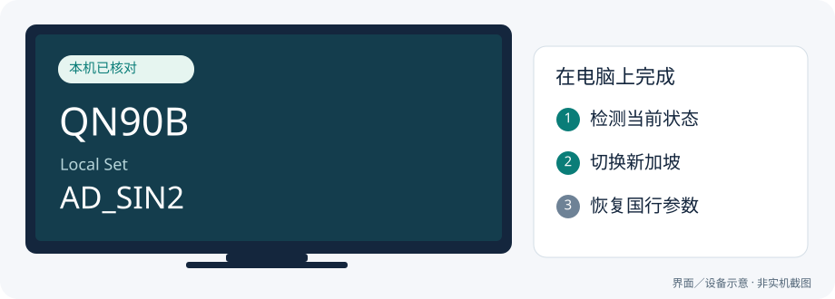
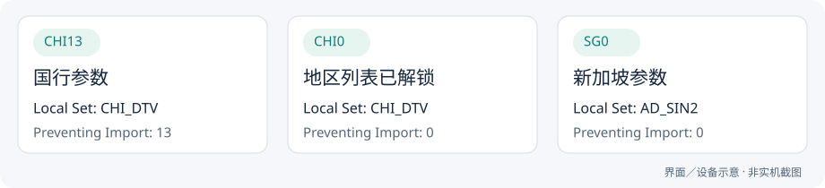
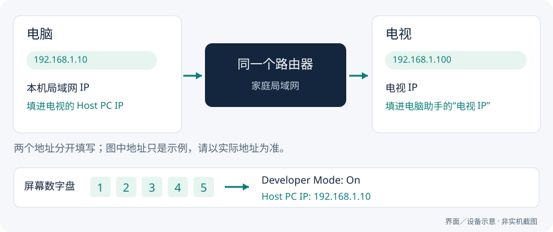
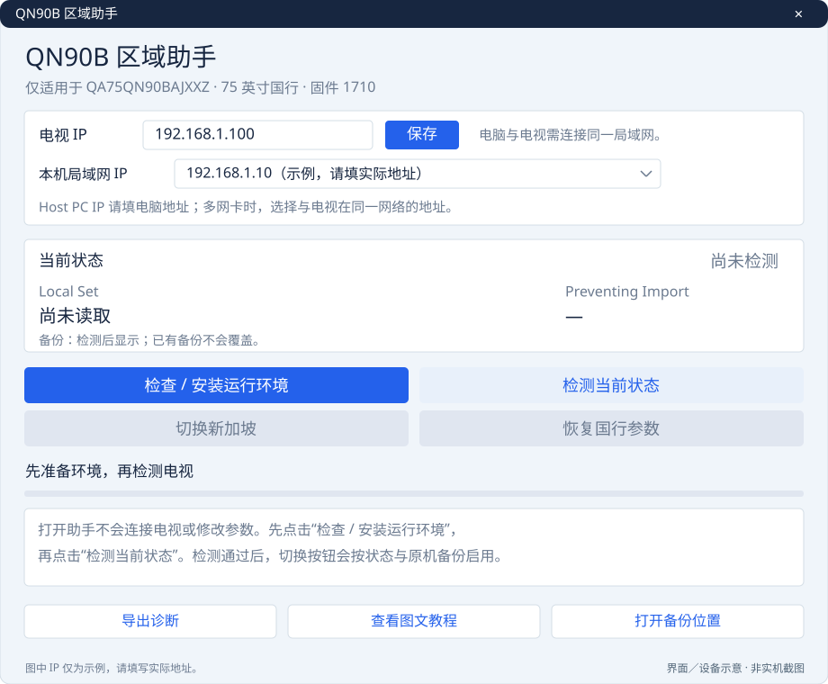
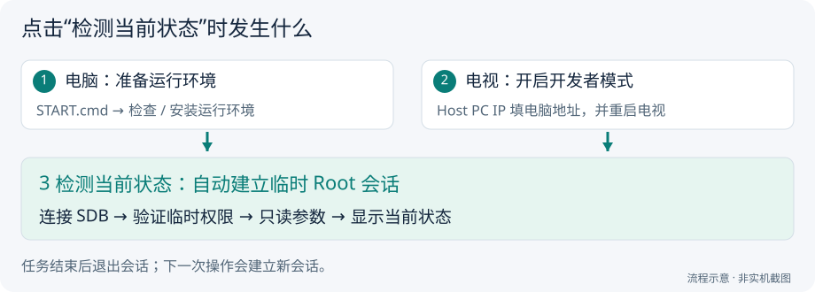
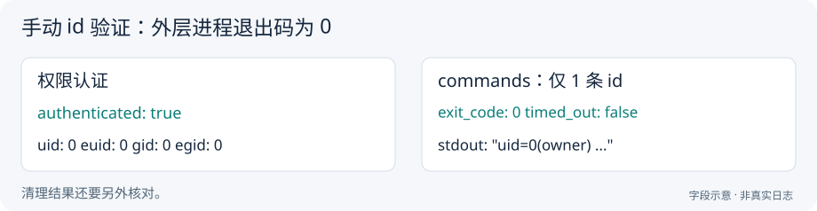
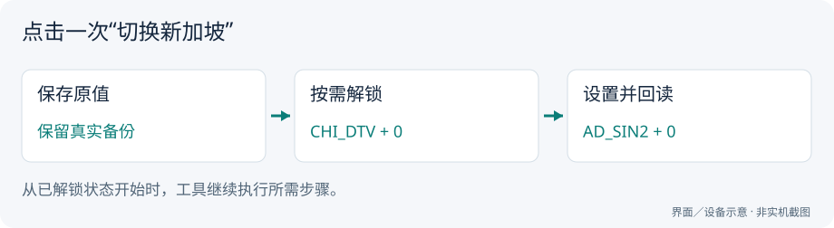

QN90B 区域助手
图文使用指南 · 从检测到切换，再到恢复原值

打开工具
右键 ZIP 选择“全部解压”，再双击解压文件夹里的 START.cmd。
检查环境，然后检测
先点“检查 / 安装运行环境”，按第 3 页启用开发者模式。填对电视 IP 后点“检测当前状态”；所需临时 Root 由工具自动建立。
按状态选择下一步
要切换时点“切换新加坡”；要回到原值时点“恢复国行参数”。已是目标状态时保留即可。
本指南只适用于已核对的 75 英寸国行 QN90B。开发者模式看第 3 页；临时 Root 与成功判读看第 5–6 页；备份与恢复看第 8 页。
回到顶部 ↑先看型号，再看状态
“新加坡参数”表示本机 Local Set 已设为 AD_SIN2。
| 项目 | 本工具要求 |
|---|---|
| 完整型号 | QA75QN90BAJXXZ · 75 英寸 · 国行 |
| 电视显示的固件版本 | 1710 |
| 精确系统构建 | T-PTMUABC-REL-202509042046 |
| 电脑环境 | Windows 10 / 11，x64（Intel / AMD）；不支持 ARM64。使用系统 PowerShell 5.1。 |
助手还会核对系统文件的指纹。仅看到“QN90B”或“1710”不足以保证匹配；检测不通过时，先导出诊断。

| 状态 | 你应当怎样做 |
|---|---|
| 国行参数（CHI13） | Local Set 为 CHI_DTV，Preventing Import 为 13。需要换区时点击“切换新加坡”。 |
| 地区列表已解锁（CHI0） | 仍为 CHI_DTV，Preventing Import 已为 0。再次检测后，工具可继续到新加坡。 |
| 新加坡参数（SG0） | Local Set 为 AD_SIN2，Preventing Import 为 0。已经达到本工具的目标。 |
把电视和电脑连对
已开启开发者模式且能连接电视的用户，可直接看第 4 页。

连到同一个家庭局域网
电视和电脑接入同一路由器。电视可用网线，电脑可用 Wi-Fi；避免访客网络或设备隔离。助手中的“本机局域网 IP”要选择连接该路由器的网卡。[1]
查看电视 IP
在电视“设置 > 所有设置 > 连接 > 网络 > 网络状态 > IP 设置”查看地址；部分界面在“通用 > 网络”。把这个地址填到助手的“电视 IP”。只查看即可。[4]
开启开发者模式
打开电视“应用 / Apps”。有“应用设置 / App Settings”的界面进入该页。按遥控器数字／彩色键（通常标为 123）调出屏幕数字盘，用方向键和确认键依次选择 1、2、3、4、5；若要求提交，选择“完成 / 输入数字”。[1][2][3]
填写电脑地址并重启电视
在 Developer Mode 窗口把开关设为 On，将 Host PC IP 填成助手显示的电脑地址，例如 192.168.1.10，确认后重启电视。这个位置不能填电视自己的 .100。[1]
打开 START.cmd
GitHub 源码发行不含第三方运行包，首次准备环境需要联网。

完整解压后打开
在 GitHub 点击“Code > Download ZIP”，使用“全部解压”。保留 app、engines、guide 等全部同级内容，然后双击 START.cmd。不要在压缩包预览窗口里运行。
保存地址，检查运行环境
“电视 IP”填当前电视地址并点“保存”；核对“本机局域网 IP”。点击“检查 / 安装运行环境”，等待完成。
工具从上游固定版本地址下载组件并核对 SHA256，后续可复用已核验的缓存。优先使用本机可运行的 OpenSSL；没有可用版本时，首次合计下载约 137 MB。通常无需管理员权限，也不要求安装 Python 或完整 Tizen Studio。
首次准备 OpenSSL 需要系统内置 tar.exe，只从官方 Git 归档提取所需文件，无需运行 Git 安装器。旧系统提示 tar.exe 缺失或不支持解压时，请更新 Windows，或安装官方 Git for Windows 后重试。
回到顶部 ↑检测时自动建立临时 Root
推荐使用图形界面的检测流程，无需预先设置永久 Root。

先准备电脑环境
打开 START.cmd，点击“检查 / 安装运行环境”。固定使用 samsung-tv-root v0.0.13、SDB 4.2.36 与 Windows x64；本机电视使用 .NET runtime 3.1。[5][6]
启用电视开发者模式
按第 3 页配置 Developer Mode 与 Host PC IP，确认电脑和电视处于同一局域网，并按要求重启电视。
点击“检测当前状态”
后台流程会连接 SDB、尝试临时 Root，权限通过后读取本机参数并显示状态。Root 或参数核验失败时停止，保留日志再排查。
手动验证只运行 id 时不会调用工厂参数 setter。archive-root probe 也会实际尝试 Root，不能把它当作纯电脑环境检查。
回到顶部 ↑确认 Root，要看整组结果
下表针对手动仅运行一次 id 的验证；GUI 会另行核对完整检测结果。

| 需要核对的层次 | 本指南的成功判据 |
|---|---|
| 外层进程 | 命令行工具退出码为 0。 |
| 认证与数字身份 | authenticated = true；uid、euid、gid、egid 均为 0。 |
| 唯一验证命令 | commands 恰好包含 1 条命令，command 为 id。 |
| id 的执行结果 | exit_code = 0；timed_out = false；stdout 中显示 uid=0。 |
| 暂存清理 | 另外确认 staging_cleaned = true。 |
| 上游检查的两文件 | 另外确认 system_files_unchanged = true：只表示 /etc/passwd 与 /usr/share/sdbd/public.pem 保持一致，不代表整机全量校验。 |
uid=0(owner) 中的数字 0 仍表示该命令的 UID 为 0。model: null 在 generic archive 模式中正常；它本身不是失败信号。
回到顶部 ↑先检测，再切换新加坡
点击切换按钮就会执行；工具会在写入前再次核对。

点击“检测当前状态”
等待显示当前 Local Set、Preventing Import、备份状态。检测阶段只读取地区参数；连接所需的临时权限由工具处理。
确认状态与备份提示
如果显示“新加坡参数”，已经完成，无需重复。若显示“国行参数”或“地区列表已解锁”，且“切换新加坡”可用，可继续。
点击“切换新加坡”并等待
工具会保存真实原值，按需解锁地区列表，再设置 AD_SIN2，并逐步回读核对。运行期间保持电视开机、电脑不休眠。
查看完成结果
成功应显示“新加坡参数”：Local Set 为 AD_SIN2，Preventing Import 为 0。再次点击“检测当前状态”可复核。
运行过程中请等待底部日志结束，不要同时运行旧版脚本或拔电。完成后若正常重启了电视，再检测一次，才能核对重启后参数是否保留。
回到顶部 ↑用真实备份恢复国行参数
恢复按钮会自动按正确顺序完成两步，无需手动填数值。
使用原来操作的电脑和账户
先检测。助手会查找本机已有的两份 Original-Baseline.json，并校验它们是否属于当前这台电视。
点击“恢复国行参数”
按钮可用表示所需条件已满足。工具先将 Local Set 恢复为 CHI_DTV，再把 Preventing Import 恢复到原值 13。每一步都会回读。
检查最终状态
成功后应显示“国行参数”：Local Set 为 CHI_DTV，Preventing Import 为 13。它恢复的是本次修改的这两项原值。
%LOCALAPPDATA%\QN90B-root\stage1\<电视IP>\Original-Baseline.json
%LOCALAPPDATA%\QN90B-root\stage2\<电视IP>\Original-Baseline.json点击“打开备份位置”，把这两份原值文件另存一份。不要改文件内容，也不要用别人的备份替换。若电视 IP 改了或换了 Windows 账户导致备份不匹配，请导出诊断。
回到顶部 ↑按提示定位，不反复写入
先看底部日志，再用“导出诊断”保留本次结果。
| 看到的情况 | 先做这一步 |
|---|---|
| 双击后没有窗口 | 确认已经全部解压，运行的是 START.cmd。若有命令窗口错误，完整保留错误文字。公司电脑的脚本限制需由管理员处理。 |
| 电视连接失败 / 26101 不通 | 确认电视开机、电视 IP 正确、两者在同一家庭局域网；再核对开发者模式的 Host PC IP 是电脑地址。更改开发者设置后重启电视。[1] |
| 本机 IP 下拉有多个地址 | 选择与电视所在家庭网络对应的网卡。不要选断开的网卡或无关虚拟网卡；图中 192.168.1.10 只是电脑地址示例。 |
| 缺运行环境 / 403 / 缓存损坏 | 首次配置需能访问上游下载站点。确认网络后点“检查 / 安装运行环境”重试；仍失败就导出诊断。不要自行替换版本或跳过文件校验。 |
| 权限失败 / 检测超时 | 确认开发者模式与电脑 IP，检查防火墙是否允许本工具在家庭／专用网络通信。不要关闭整机防火墙；保留完整日志再排查。 |
| 切换 / 恢复按钮是灰色 | 先安装环境并检测。缺真实原值备份、固件指纹不匹配或未知状态都会阻止写入，按状态卡和日志说明处理。 |
| 操作失败或提示已回退 | 不要把失败当成功。重新检测，确认当前参数，再导出诊断。只在明确满足条件后继续。 |
官方说明 26101 是电视内部连接端口，不能单独打开；排查应从电视开发者模式与网络连接入手。[1]
回到顶部 ↑留住备份，知道验证边界
把完整工具包、两份原值文件和成功结果一起保存。
建议保留：完整工具包、Stage1 和 Stage2 的 Original-Baseline.json、最近一次成功结果／导出诊断。参数原值备份用于回退这两项设置，不是整机 EEPROM 或全部工厂参数镜像。
已有验证情况：Stage1 已对照实机 JSON 确认从 13 改为 0，Local Set 未变，列表从 2 项扩展为 55 项；Stage2 有用户切换成功反馈。新版图形封装完成离线检查，尚未完成 Windows 实机点测。重启后的最终状态以再次检测为准。
操作范围：本包围绕已核对的地区参数进行读取、切换与回退。海外应用和流媒体是否可用，不由 Local Set 一项决定。这里不重新展开刷固件、Smart Hub 区域或网络出口设置。
官方资料与原始来源
- [1] Samsung Developer：连接电视、开发者模式与 Host PC IPhttps://developer.samsung.com/smarttv/develop/getting-started/using-sdk/tv-device.html
- [2] Samsung Developer：Apps 页面输入 12345（早期界面示例）https://developer.samsung.com/tizen/blog/en/2019/07/16/connecting-smart-tv-and-visual-studio
- [3] Samsung 官方：数字／彩色键与屏幕数字盘https://www.samsung.com/ae/support/tv-audio-video/navigate-your-samsung-tv-using-the-smart-remote-control/
- [4] Samsung 官方：2022 年及以后电视的网络状态入口https://www.samsung.com/ca/support/tv-audio-video/verify-network-status-on-your-samsung-tv/
- [5] 原作者 samsung-tv-root v0.0.13；本包固定版本https://github.com/chris-ritsen/samsung-tv-root/tree/v0.0.13
- [6] SDB 官方下载目录；本包使用 4.2.36https://download.tizen.org/sdk/tizenstudio/official/binary/sdb_4.2.36_windows-64.zip
- [7] 便携 OpenSSL 的发行来源：Git for Windows 2.56.1https://github.com/git-for-windows/git/releases/tag/v2.56.1.windows.1
资料核对日期：2026-11-18。开发者模式和数字盘步骤依据三星官方资料整理；本机参数映射依据本次实机读数与本机文件核验。所有插图为重新绘制的示意，不是用户电视或 Windows 的实机截图。
回到顶部 ↑